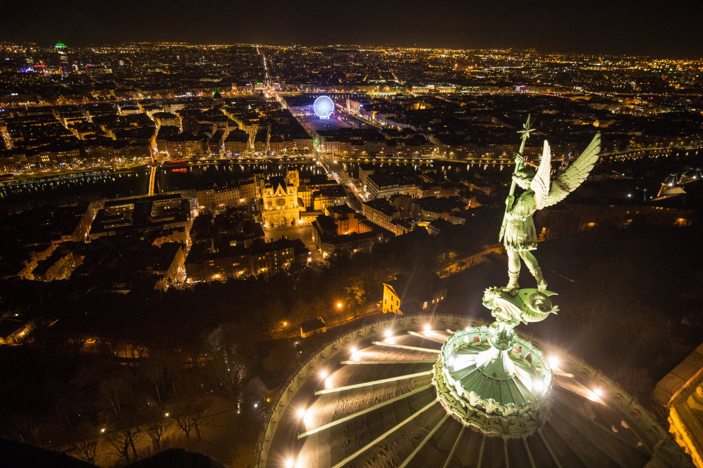

<section class="light-reveal-section">
    <div class="spotlight-container">
        <div class="top-gradient"></div>
        <div class="spotlight-overlay"></div>
        

        <div class="svg-trigger" id="reveal-trigger">
            
        </div>

    </div>

    <style>
        .light-reveal-section {
            width: 100%;
            height: 100vh;
            background-color: black;
            display: flex;
            justify-content: center;
            align-items: center;
        }

        .spotlight-container {
            position: relative;
            width: 100%;
            height: 100%;
            overflow: hidden;
        }

        .spotlight-container img {
            width: 100%;
            height: 100%;
            object-fit: cover;
            display: block;
        }

        .spotlight-overlay {
            position: absolute;
            top: 0;
            left: 0;
            width: 100%;
            height: 100%;
            pointer-events: none;
            background: radial-gradient(
                    circle 350px at var(--x, 50%) var(--y, 50%),
                    transparent 0%,
                    rgba(0, 0, 0, 0.95) 100%
            );
            transition: background 0.05s;
            z-index: 2;
        }

        .top-gradient {
            position: absolute;
            top: 0;
            left: 0;
            height: 100px;
            width: 100%;
            background: linear-gradient(to bottom, rgba(0, 0, 0, 0.9), transparent);
            z-index: 3;
            pointer-events: none;
        }

        .svg-trigger {
            position: absolute;
            top: 20px;
            left: 20px;
            z-index: 5;
            cursor: pointer;
        }

        .svg-trigger img {
            width: 120px;  /* Grosse lampe */
            height: auto;
            display: block;
            transition: filter 0.3s ease;
        }

        .glow {
            animation: glow 1s ease-in-out infinite alternate;
        }

        @keyframes glow {
            from {
                filter: drop-shadow(0 0 5px white) drop-shadow(0 0 10px white);
            }
            to {
                filter: drop-shadow(0 0 20px white) drop-shadow(0 0 35px white);
            }
        }

    </style>
</section>
